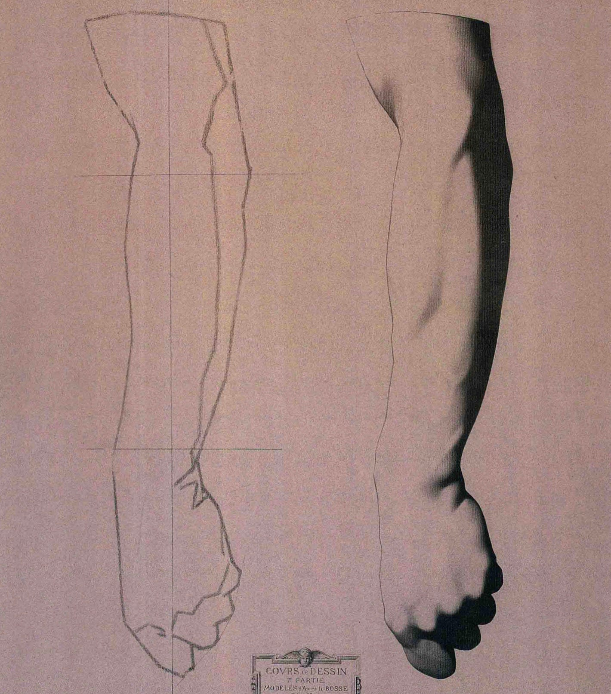

对「基于现有视觉技术的自动驾驶」还存在希望的人们都应该学一下素描。你会发现素描最简单的原理就能推翻现有的所有机器视觉技术。
最开头画了几根线，是没有立体感的，然后按光的传播规律加上阴影和明暗变化，就有了立体感。素描就是靠着阴影使得人类视觉系统产生空间立体模型，每一个微妙的起伏都可以清晰地还原出来。只有靠 3D 视觉准确识别出物体的边界，才可能产生可靠的运动能力（包括开车）。
没有了阴影，也就没有了 3D 视觉。现有的机器视觉技术完全不知道阴影的存在，更不要说利用它，又如何能实现人类一样的视觉呢？试想让机器视觉完成这个简单的实验：把图片里的阴影标记出来，准确地区分开阴影和实体的图像。这一点都做不到的话，就别想达到人（动物）的视觉系统能力了。
